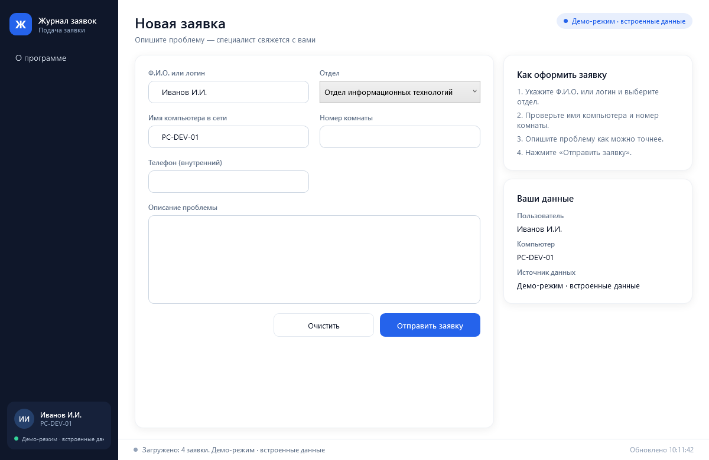

Журнал заявок JournalNext
Электронный журнал заявок: клиент подачи, оператор обработки и сервер на MySQL. Повторяет логику оригинальной программы 2006 года, но работает на современном стеке.
- Клиент, оператор и сервер в одном репозитории
- WPF для Windows и Avalonia для Linux
- Демо-режим со встроенными данными
- MSI, .deb и tar.gz в релизах

Клиент подачи заявки · демо-режим